Stylize Passes
A stylize pass is a full-screen effect that changes how the picture looks rather than how the light behaves: the painterly Kuwahara filter, ASCII, the pencil sketch and watercolor (epic #260). They share one framework in flint-render (crates/flint-render/src/stylize/), so a new style is mostly a shader and a parameter list.
This page is the reference. For choosing between a whole-frame and a per-entity style, which grid glyphs sit on and which stage a style runs at, with the captures the choice was made from, see the guide Stylized Rendering and ADR 0111.
Using a style
A scene switches a style on with a table under [post_process]:
[post_process]
bloom_enabled = true
[post_process.styles.invert]
strength = 1.0 # a parameter: a number
A table switches its style on unless it says enabled = false. Every other key is one of the style’s parameters (a number) or one of its options (a string, such as a font or a ramp). Unknown style names and keys are reported as warnings when the scene loads, with the names that do exist:
WARN unknown style 'watercolour' in [post_process.styles]; registered: kuwahara, watercolor, ascii, pencil, invert, mask_view
WARN style 'invert' has no parameter 'wobble'; it takes: strength
Kuwahara predates the table and keeps its own kuwahara_* fields (see Post-Processing).
From the command line, --style name[:key=value,...] turns any registered style on over a scene without editing it (#271), on flint render and on flint edit <model or effect> --render:
flint render demo/pbr_test.scene.toml --style ascii
flint render demo/stylize_props.scene.toml --style ascii:ramp=detailed,color=tint,cell=10
flint render demo/pbr_test.scene.toml --style invert:strength=0.5 --style kuwahara:radius=6
flint render demo/stylize_props.scene.toml --style ascii:color=tint,tint=#ffb340 # a colour: #rrggbb or r/g/b
flint render levels/tavern.scene.toml --style ascii:off # the scene's table off (entities' ascii_style stay on, #376)
flint edit demo/models/barrel.glb --render barrel.png --style ascii:cell=6
flint render demo/pbr_test.scene.toml --style help # every style and its keys
Listing the styles
flint render --list-styles prints every registered style (#303): its stage, where a scene sets it, its options with their choices and its parameters with their defaults, F4 ranges and whether they step by whole numbers, each with its hover help. Add --json for an agent; give a scene and the user styles in its styles/ folder are listed too:
flint render --list-styles
flint render demo/user_styles.scene.toml --list-styles --json
kuwahara (Kuwahara) [hdr, builtin]
[post_process] kuwahara_*
kuwahara_radius 4 [1 .. 8, integer]
...
invert (Invert) [display, builtin]
[post_process.styles.invert]
strength 1 [0 .. 1] — How far toward the negative: 0 = none, 1 = full
Each JSON entry has name, label, stage (hdr or display), source (builtin or user), table, component (the per-entity component, or null), uses_mask, params (name, key as the scene writes it, default, min, max, integer, color (the colour it is a channel of, or null), label, help), options (name, default, choices, label, help; empty choices take any text) and colors (key, default as [r, g, b], channels, label, help; #315). The text form lists a colour once, by its key. A range is the F4 menu’s: a value outside it is taken as written. Every table also takes enabled and order. The list is read from the same declarations as F4 and --style, so a new style appears in it with nothing added (flint_render::stylize::catalog).
The keys are checked against the style’s declaration: a number for a parameter, text for an option (one of its choices when it lists them), a colour as #rrggbb or r/g/b (tint=0.3/1/0.4: commas split the keys, so not r,g,b), off or enabled=false. A mistake names what would have worked (--style ascii has no key 'colour'; it takes: cell=8, ..., color=source|tint|raw, off). kuwahara: takes radius, sharpness, hardness and anisotropy, its kuwahara_* fields. --style-time <s> fixes the post time animated styles read (headless captures default to 0).
In the player and the scene viewer, F4 → Styles lists every style that reads the table, each in a section of its own drawn from the style’s declaration (#268). A style needs no UI code to appear there:
-
A row per setting. A combo per option with a closed list of choices, a text field per option that takes any name (a font; it applies on Enter), a slider per parameter, and one colour picker for each
<base>_r,<base>_g,<base>_btriple (ASCII’stint). The rows are labelled, explained on hover, and step by whole numbers where the style says so (hints). -
↺ beside a value that isn’t the default puts it back.
-
Defaults clears the style’s values. Authored puts back what the scene says, on and off included. Copy TOML puts the
[post_process.styles.<name>]block that reproduces what’s on screen on the clipboard, with only the values that differ from the defaults, so a look tuned by eye goes back into the scene in one paste:[post_process.styles.ascii] color = "palette" palette = "amber" cell = 16 levels = 5 glow = 0.77 -
Against the scene. The header says edited while the style differs from the scene’s own table, and a dot marks each value that does (hover it for the scene’s value).
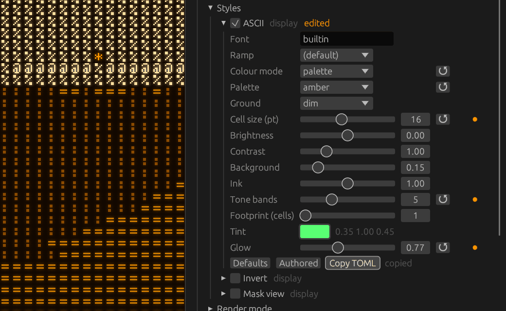
The same editor is the player’s F3 Styles panel, which appears with the other scene panels when the scene uses a style (a [post_process.styles] table or a style_mask entity). It also lists the scene’s styled entities, the style each asks for, and the hue the mask view paints that style in.
| Style | Stage | Parameters |
|---|---|---|
kuwahara | HDR | the kuwahara_* fields |
watercolor | Display | see Watercolor |
ascii | Display | see ASCII |
pencil | Display | see Pencil |
invert | Display | strength 0–1 (default 1): how far toward the negative |
mask_view | Display | shading 0–1 (0.8), dim 0–1 (0.35), outline 0–4 px (1): shows the entity style mask |
invert is the template style: the smallest one that exercises the framework.
ASCII
The full-screen ASCII style (#265) turns every cell of one screen grid into a glyph from a glyph set. The cell’s luminance picks a step of the ramp, so glyph density carries brightness, and the glyph is inked in the cell’s colour or a tint.
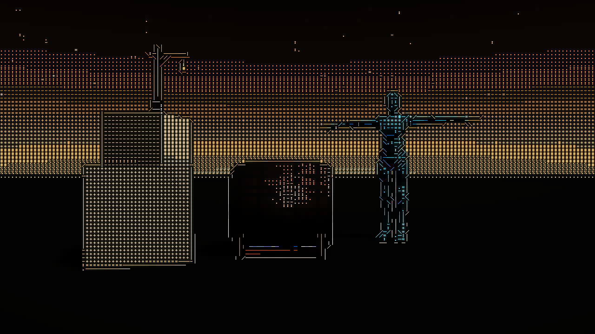
flint render demo/ascii_lantern.scene.toml --width 1280 --height 720, with no other flags: the scene’s [camera] frames it and its [post_process.styles.ascii] block sets the look.
The style rewards value contrast. Glyph density follows luminance, so a scene lit for PBR, mid-greys everywhere, turns into an even field of = and -. demo/ascii_lantern.scene.toml (#316) is authored for glyphs instead: a near-black ground that stays empty, crates lit warm from one side by a lamp so each has a bright face and a dark one, and a figure and a barrel standing against the last band of a low sun under a dark, starred sky. Its block raises contrast to 1.5, which pushes the dim sky to black and keeps the glyphs for what is lit. The ground’s top sits 2 cm above y = 0, so the editor grid flint render draws by default is hidden under it instead of being traced into dashes. The same scene in each built-in ramp:
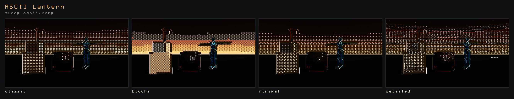
flint render demo/ascii_lantern.scene.toml --sweep ascii.ramp=classic,blocks,minimal,detailed
[post_process.styles.ascii]
cell = 8 # cell width in points; the height follows the font's aspect
font = "builtin" # or a fonts/<name>.glyphs.toml set beside the scene
ramp = "classic" # a ramp of that set; empty = the set's default_ramp
color = "source" # source | tint | raw | mono | palette
palette = "phosphor" # with color = "palette": a built-in or palettes/<name>.palette.toml
ground = "dim" # dim | black | inverse
glow = 0.0 # halo around bright glyphs
flint render demo/ascii_lantern.scene.toml --width 1280 --height 720 # authored for the style
flint render demo/pbr_test.scene.toml --ascii --schemas schemas --width 1280 --height 720
flint render demo/mesh_meadow.scene.toml --ascii --ascii-ramp blocks --ascii-tint 1,0.7,0.25
| Key | Default | |
|---|---|---|
cell | 8 | Cell width in points (4–32). Times the window’s scale factor, so cells look the same size on a high-DPI display; rounded to whole pixels |
font | builtin | The glyph set: builtin, a set name (fonts/<name>.glyphs.toml in the scene’s folder or its parent) or a .glyphs.toml path. One that fails to load falls back to the built-in set, with a warning |
ramp | the set’s default | A ramp of the set. The built-in set has classic, blocks, minimal and detailed. An unknown name warns once and uses the default |
color | source | source: the cell’s hue at full value. tint: one colour (tint, default phosphor green). raw: the cell’s colour as it is, dark cells dark. mono: white glyphs on grey. palette: the inks of palette (see Colour modes) |
tint | [0.35, 1.0, 0.45] | With color = "tint": the ink, a colour ([r, g, b] 0–1 in display values, or "#59ff73"). --ascii-tint r,g,b sets it |
palette | phosphor | With color = "palette": cga, cga-warm, cga16, phosphor, amber, mono, or a palette file. One that can’t be found warns once and uses phosphor |
ground | dim | Behind the glyph: dim (the mode’s own: the cell’s colour times background, or the palette’s background), black, or inverse (the ink fills the cell and the glyph is cut out of it; the ramp runs backwards so bright cells stay bright) |
glow | 0 | A halo around each glyph, stronger on bright cells (0–2; 0.6 reads as a phosphor tube). It’s drawn in the pass, since a display-stage style runs after bloom |
background | 0.15 | How much of the cell’s colour fills behind its glyph: 0 is black, 1 the cell’s colour |
brightness, contrast | 0, 1 | Luminance remap before the ramp: contrast about mid-grey, then an offset |
exposure | 0 | Stops of gain on each cell’s colour, in linear light, before its glyph and ink are picked (-4–4, --ascii-exposure). See dark props |
normalize | 0 | Stretch the style’s own luminance range over the ramp, measured from the same frame: the whole frame’s, or each styled entity’s (0–1, --ascii-normalize; #289) |
ink | 1 | Glyph brightness |
levels | 0 | Quantize the tone to this many bands (0 keeps every step of the ramp) |
footprint | 1 | Average each cell’s colour over this many cells (wider settles texture noise) |
edges | 1 | Line glyphs along edges, mixed over the tone glyph: 0 turns the edge passes off, 1 draws the line alone |
edge_threshold | 0.5 | How much edge, in cell widths, a cell needs to draw a line glyph (a line straight across is 1) |
edge_max | 3 | More edge than this is texture-like geometry (grass, foliage) and keeps its tone glyph. A styled entity’s outline ignores it |
edge_depth | 0.6 | The relative view-distance step that counts as a silhouette (lower finds more) |
edge_normal | 2.5 | The normal change, as a Sobel over normals rebuilt from depth, that counts as a crease (lower finds more) |
outline | 1 | Per-entity only: ink a styled entity’s own pixels this many points from its silhouette (0–4, at least one pixel when on; 0 = off), so features thinner than a cell keep their shape (Silhouettes, #288) |
min_coverage | 0.5 | Per-entity only: the least ink of the pixels in a cell the entity only grazes (0–1) |
temporal | on | Temporal stability (#277), below. off draws every frame as if it were the first |
smoothing | 0.6 | How much of last frame’s colour a cell keeps (0–0.95). A cell whose colour jumps takes the new one at once, so nothing trails |
hysteresis | 0.35 | How far, in ramp steps, a cell’s tone may stray from its glyph’s band before the glyph changes (0–1) |
dither | 0 | Ordered (4x4 Bayer) dither before the ramp, fixed to the grid: gradients break into a still pattern instead of one hard edge (0–1, --ascii-dither) |
Temporal stability
In motion, a cell whose tone sits on a ramp boundary tips to the neighbouring glyph and back at the slightest change, and the whole picture crawls. So the style draws in two passes: a cell pass writes each cell’s colour and glyph into a small state texture (one texel a cell), and the glyph pass draws from it. The state is kept for the next frame. A cell blends in part of last frame’s colour (smoothing) and keeps last frame’s glyph until its tone has clearly moved on (hysteresis).
On demo/ascii_motion.scene.toml, a slow orbit of the meadow clearing captured at 1280x720 with --frame-step 0.0166667 for 3 s (181 frames, 14,400 cells), python tools/ascii_flips.py counted:
| glyph flips per frame | reversals per frame (A, B, A) | |
|---|---|---|
temporal = "off" | 408.3 (2.84% of cells) | 100.6 (0.70%) |
temporal = "on" | 118.3 (0.82%) | 0.1 (0.00%) |
Reversals, where a glyph changes and changes back two frames later, are the shimmer itself, and they are gone. The flips that remain are the scene really moving.
The state counts as history only when the last frame the renderer drew was the one before, and the grid, ramp and size are unchanged. A single flint render therefore draws exactly what the stateless style drew, and a --frame-step capture gives the style the same frames every run. The player’s captures can still differ from run to run by one level in a few pixels, with the history on or off (#341). The history absorbs those differences rather than carrying them forward. The player calls SceneRenderer::reset_style_history() when a new scene comes up. Call it on a camera cut too, so the new shot doesn’t start from the old one’s glyphs.
It is a display-stage style: it reads the finished, tonemapped picture at output resolution, after the render-scale upscale, so glyphs stay sharp at --render-scale 0.5. The grid is centred on the frame, so the part cells at the borders match. At a whole-number scale (8 px glyphs in 8, 16 or 24 px cells) glyphs are drawn exactly; at a fractional one, such as 12 px cells on a 1.5x display, each glyph pixel keeps one width and only its borders blend. It costs about 0.04 ms at 1080p on an RTX 4070 (--gpu-time 240), down from about 0.15 ms before #277 split it in two: the cell pass averages each cell’s colour once, where the old single pass did it for every pixel. That is with edges = 0. The edge passes add about 0.4 ms (measured on the tavern before #277, as 0.15 against 0.53–0.67 ms).
| Key | Default | |
|---|---|---|
scope | screen | screen: the table glyphizes the whole frame. entities: only the entities that ask (below), the table being their preset |
grid | screen | screen: one grid centred on the frame. object: each styled entity’s cells pinned to its projected origin (below) |
Edges (#267) draw line glyphs along silhouettes and creases, and per-entity ASCII (#266) applies the style to chosen entities. Its goldens are in the stylize goldens.
Colour modes
The glyph’s shape carries brightness; its colour sets the mood (#276). Every capture below is demo/pbr_test.scene.toml at 1280x720, cropped at 1:1 around the two boxes and the character. They were made before edges (#267) were on by default: add --ascii-no-edges to get them exactly, or leave it off and the boxes are outlined too.
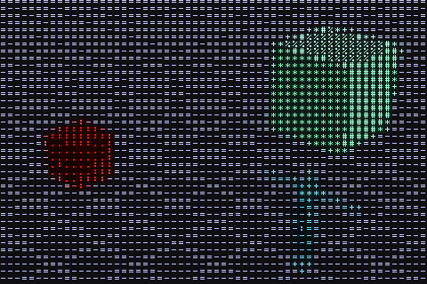 --ascii (source) | 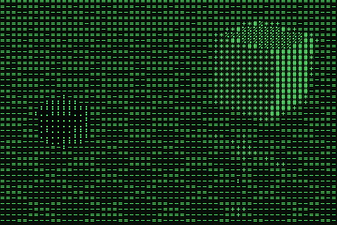 --ascii-color tint |
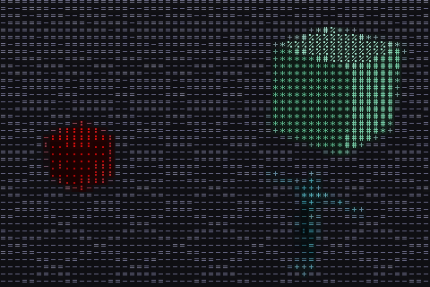 --ascii-color raw | 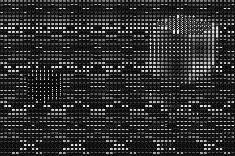 --ascii-color mono |
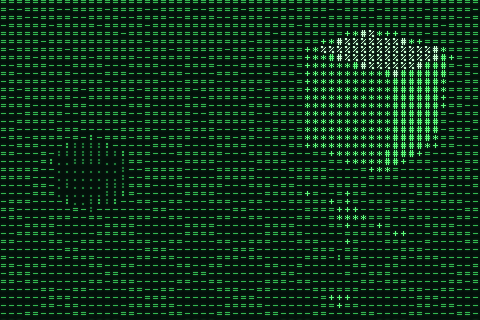 --ascii-palette phosphor --ascii-glow 0.6 | 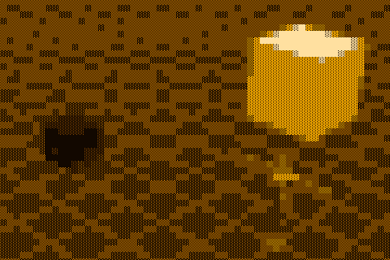 --ascii-palette amber --ascii-ramp blocks |
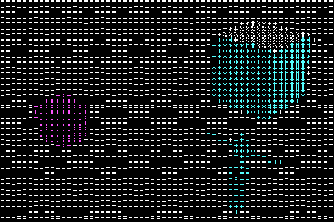 --ascii-palette cga | 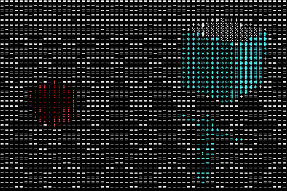 --ascii-palette cga16 |
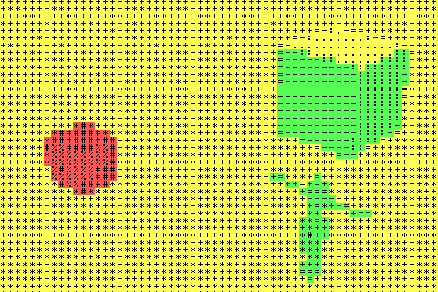 --ascii-palette cga-warm --ascii-ground inverse | 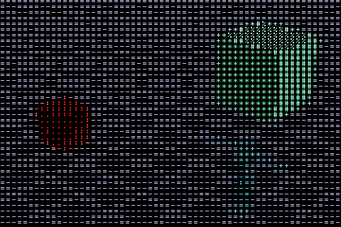 --ascii-ground black |
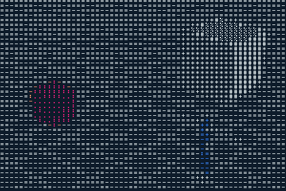 --ascii-palette tidepool (demo/palettes/tidepool.palette.toml) |
And on demo/mesh_meadow.scene.toml (640x360 crops):
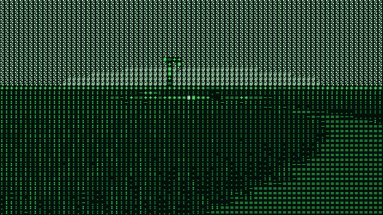
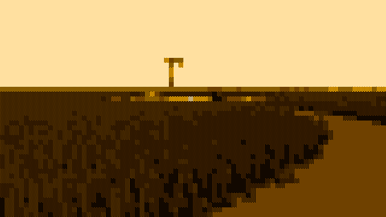
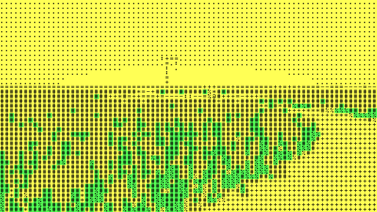
Palettes live in flint_render::palette, so any style can use them. A palette is a list of inks and a background, in display (sRGB) hex:
# palettes/tidepool.palette.toml, beside the scene or in its parent folder
match = "nearest" # nearest (default) | luminance
background = "#0d1b2a" # default black
colors = ["#1b998b", "#3a86ff", "#ed217c", "#ff9b71", "#fffd82", "#e8f1f2"]
nearest gives each cell the ink nearest its hue at full value (plain RGB distance), so a dark red still reads red and glyph density alone says it’s dark; desaturated cells land on the palette’s lightest neutral. luminance lists the inks darkest first and picks one by the cell’s tone, as a one-colour phosphor tube does. Up to 32 inks. A file wins over a built-in of the same name; PaletteCache resolves names the way GlyphSetCache resolves fonts, through the vfs.
| Built-in | Match | Inks |
|---|---|---|
cga | nearest | cyan, magenta, white on black (mode 4, palette 1, high intensity) |
cga-warm | nearest | green, red, yellow on black (palette 0, high intensity) |
cga16 | nearest | the 15 text-mode colours on black |
phosphor | luminance | four greens on near-black |
amber | luminance | four ambers on near-black |
mono | luminance | four greys on black |
On an RTX 4070 at 1080p the pass costs 0.143 ms in source, 0.152 ms matching cga16’s 15 inks, 0.144 ms with ground = "inverse" and 0.220 ms with glow on (24 more glyph reads a pixel).
Edges
Luminance alone loses a silhouette wherever an object is about as bright as what’s behind it. So cells along the scene’s edges draw the glyph set’s line glyphs, ─ │ ╱ ╲ in the built-in set, picked by the direction of the edge through the cell (#267). Away from edges cells keep their tone glyphs.
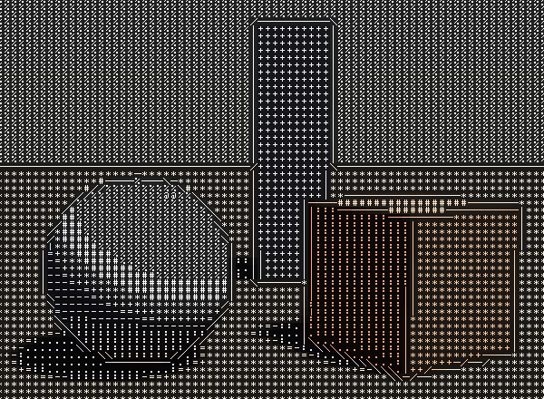
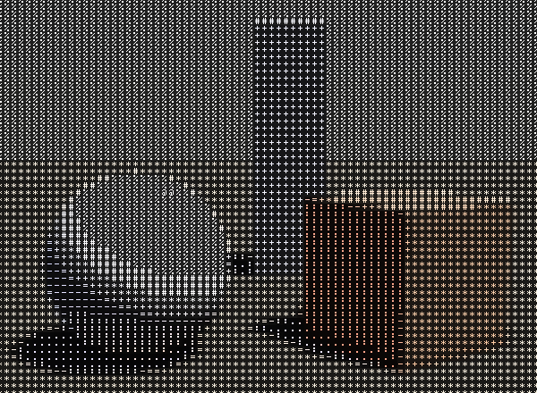
demo/ascii_edges.scene.toml at 1280x720, cropped at 1:1, with edges (top) and with --ascii-no-edges. The sphere and the box carry style_mask { style = "ascii" }; the pillar has none, so it is outlined by depth alone.
Edges come from geometry, never from colour, so a wood texture makes none but a table’s outline and its creases do (the ASCII spike’s finding, #261). Three passes, before the glyph pass:
- Edge pixels, at the depth’s resolution. A 3x3 Sobel over the relative view distance finds silhouettes; one over normals rebuilt from the depth finds creases, counted only where the 5x5 patch is one surface. Where an ASCII-styled entity (an
ascii_style, or astyle_mask { style = "ascii" }, the entity style mask) meets anything else, including another styled entity with different settings, the pixel is an outline. Silhouettes and outlines keep their near side only, so each is drawn once. - Cells, one fragment a glyph cell. It reads every edge pixel in its cell, not a sparse lattice, so a one-pixel outline can’t slip between samples, and sums their structure tensors: the dominant orientation picks the glyph. The cell draws a line when it holds at least
edge_thresholdcell widths of edge and at mostedge_max(an outline needs only the threshold). - The glyph pass draws the cell’s line glyph. A cell holding under one cell width of line yields to a neighbour across the line holding more, so a line that runs along a cell border isn’t drawn twice.
Under a render scale the edge pixels are the scene’s, so a line is still one cell wide. The editor grid of flint render (on unless --no-grid) writes depth, so its lines are traced too; renders of the look pass --no-grid.
Edges come with the colour modes: line glyphs are inked as the cell’s tone glyph would be, cut out of the ink under ground = "inverse", and glow around them. The edge cells lie on the screen grid, so per-entity variants on that grid get them, and a variant on grid = "object" keeps its tone glyphs. Edge cells keep no history: under #277’s temporal stability the tone glyphs hold still and the lines follow the geometry each frame. The stylize goldens pin pbr_test without edges (the #265 golden, unchanged), with edges, and the sphere and box above.
Dark props: exposure and normalize
Glyph density follows luminance, so a dark prop maps to . and - and nearly disappears: a barrel in the meadow reads as a black shape with a few dots. Carrying hue in the ink helps, but the brightness is still gone. A luminance palette (phosphor, amber, mono) dims it twice, since it picks the ink rung by the same tone (#289).
Two settings fix it, on the scene’s table or on one entity’s ascii_style:
exposure, in stops: the cell’s colour times 2^exposure in linear light, before the glyph and ink are picked. Simple, but a dark prop’s range stays narrow, only higher up.normalize, 0 to 1: the style’s own tone range is stretched over the whole ramp. Each style id has its own range: the whole frame’s (slot 0), and each per-entity variant’s, so a dark barrel and a bright sign in one frame are stretched separately. 1 maps the range onto 0..1; between 0 and 1 mixes the stretched tone with the plain one.
[entities.barrel.ascii_style]
normalize = 1.0 # its own tones over every glyph of the ramp
exposure = 0.5 # optional: half a stop first
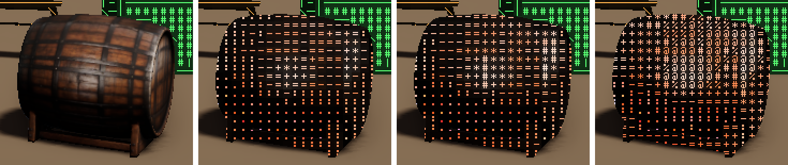
The barrel in demo/ascii_entities.scene.toml at 1280x720, cropped and doubled: smooth, plain, the brightness = 0.35, contrast = 1.4 it needed before, and normalize = 1 (its setting now). Its lower half averages 0.024 luminance in the smooth render, so it stays sparse even stretched: that is real darkness, not lost detail.
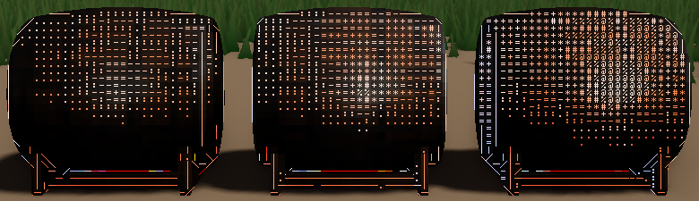
demo/ascii_dark_props.scene.toml: plain, exposure = 1.5 and normalize = 1, side by side.
The range is measured from the same frame, so flint render stays deterministic and nothing lags a frame behind: two small passes before the cell pass walk a fixed 320x180 lattice over the picture, sum each slot’s samples (count, luminance, luminance squared) row by row, and resolve each slot’s range as its mean -/+ 2 standard deviations. The range maps linearly onto 0..1, then a gamma (0.35 to 2.5) puts the slot’s mean at mid-grey, since a lit top and a shadowed side are often both in range and the linear stretch alone leaves the shadow blank. That is a percentile without a histogram: a highlight or a crack moves it far less than it would a min and max. A range narrower than 0.08 is widened around its middle, so a flat wall’s noise doesn’t fill the ramp. The passes run only when some slot asks for normalize; brightness and contrast then apply to the stretched tone as before. On an RTX 4070 at 1080p, demo/ascii_dark_props.scene.toml’s ASCII pass took 0.37–0.43 ms without a normalised barrel and 0.45–0.54 ms with one (--gpu-time 240, two runs each): about 0.1 ms for the statistics.
Per-entity ASCII
An entity with an ascii_style component is drawn in glyphs while the rest of the scene stays smooth (#266). No [post_process.styles.ascii] table is needed:
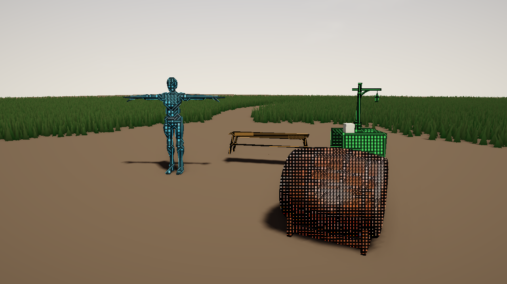
flint render demo/ascii_entities.scene.toml --no-grid --target 0.7,0.7,4.2 --distance 5.2 --yaw 29 --pitch 10, 1280x720.
[post_process.styles.ascii] # optional: the preset every styled entity starts from
scope = "entities" # without it, the table would glyphize the whole frame
background = 0.3
[entities.bench.ascii_style] # only what differs from the preset
ramp = "blocks"
color = "tint"
tint = [1.0, 0.70, 0.30] # a colour, as in the scene's table (or "#ffb34d")
levels = 4
[entities.ybot.ascii_style] # empty: the preset as it is (skinned meshes work too)
[entities.lantern_glass.ascii_style]
enabled = false # stays smooth, even under a whole-frame ASCII
- Fields. Every key of the table above except
fontandscope, all optional. A field the entity leaves out comes from the scene’s table, then the style’s default. The schema gives no field a default on purpose, since the loader would fill it in and hide the scene’s setting. An archetype’s[archetype.<name>.defaults.ascii_style]is a preset too, and an entity’s own fields merge over it field by field. - Descendants inherit their ancestor’s style until one carries an
ascii_styleorstyle_maskof its own; the nearest wins. A plainstyle_mask { style = "ascii" }is the same as an emptyascii_style. - Ids. Entities with the same settings share one style mask id. Each distinct set of settings is a variant, and the pass looks up each pixel’s settings by its id. One frame holds 63 variants among mask ids below 256; more are drawn like the whole frame, with a warning.
- Colour. A cell’s colour averages only the samples of the pixel’s own variant, so a styled prop’s glyphs carry its colour, not the meadow’s behind it. Its silhouette is the mask’s, to the pixel.
- The whole frame. With the scene’s table on and
scope = "screen"(or--ascii), everything is glyphs and entities still change their own settings;enabled = falsekeeps one smooth. - Grids. By default every styled entity shares the screen’s grid, which keeps glyphs aligned where props meet (the spike’s finding, #261).
grid = "object"pins an entity’s cells to its projected origin: its glyphs hold still while it slides across the screen, but still swim when it turns or comes closer (#277). Each such entity gets a variant of its own. - Colour modes (
color,palette,ground,glow) are per entity too: a frame packs up to 32 palette inks in all, and a palette that doesn’t fit beside the others uses the scene’s, with a warning. - Edges between entities come from edges (#267). Without them a styled prop’s edge is only where its glyph field stops, so two styled props that overlap would run together. The edge passes draw line glyphs along depth steps and creases, and an outline wherever the style mask changes from one of the style’s ids to any other: the plain
asciiid or any variant’s, so a change between two variants is an outline too. Ids are per variant, not per entity, so two props with the same settings that touch on one surface are told apart by the depth and crease edges, not the mask. Variants ongrid = "object"don’t draw edges yet, because the edge cells are on the screen grid. - Temporal stability (#277’s
smoothing,hysteresisanddither) applies to the whole frame’s cells. A per-entity variant is drawn per pixel on its own grid and keeps no history yet, so a styled prop can still shimmer in motion. - From scripts (#269):
set_entity_style(id, "ascii"),set_style_param(id, "cell", 12.0)andclear_entity_style(id)edit the component at runtime, and changing a param every frame makes no GPU allocation. See Scripting → Style API anddemo/ascii_story.scene.toml. - Not yet: a per-entity
font(one glyph set a frame; a different one warns and draws in the scene’s), and ramps beyond 128 steps in all across the frame’s variants (a ramp that doesn’t fit uses the scene’s, with a warning).
flint render demo/ascii_entities.scene.toml --output ascii.png # as authored
flint render demo/ascii_entities.scene.toml --ascii-scope screen # the whole frame
flint render demo/pbr_test.scene.toml --ascii --ascii-grid object # flags set the preset
At 1080p on an RTX 4070 the demo’s ASCII pass costs about 0.045 ms and its mask 0.013–0.023 ms (DX12, Vulkan); with --ascii-scope screen the pass costs about 0.06 ms, and with no styled entities 0.04 ms. In Chrome it is about twice that, and a render scale leaves it unchanged, since the cells are output pixels. The numbers by backend, scale and browser are in docs/design/web.md (“Stylize passes”, #270). It works under --msaa 4 and --render-scale, where the silhouette follows the scaled mask. F4 → Styles → ASCII offers scope and grid beside the other settings, and flint edit --watch hot-reloads ascii_style edits.
Silhouettes
A styled entity’s silhouette is cut to the pixel, but it is filled with cells 8 points wide. A bench leg 3 px wide holds a sliver of one glyph, mostly ground, so under per-entity ASCII the meadow bench’s legs and rails were dark smudges, while the whole frame kept the bench readable as a shape cut out of the glyphs around it (#261, #288). Two ink floors keep thin features:
outline(points, default 1) inks the entity’s own pixels that lie within that distance of a pixel of another mask slot. The silhouette is drawn as a line inside the entity, in its own ink (the hue at full value, a tint, or a palette ink, as its glyphs are), and a feature two outlines wide comes out solid.min_coverage(default 0.5) is the least ink of every pixel in a cell the entity only grazes: under a quarter of the cell’s colour samples, easing out by five eighths.
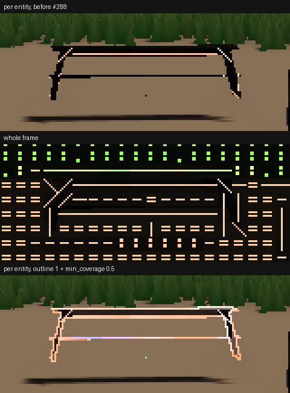
They apply to per-entity variants only: the whole frame’s cells have no silhouette, and ground = "inverse" already fills its cells with ink. outline = 0, min_coverage = 0 draws what came before. The outline reads up to 4 rings of 8 mask texels for each styled pixel. On the demo at 1080p on an RTX 4070 (--gpu-time 240, edges on) the ASCII pass measured 0.38–1.0 ms with the floors on and 0.53–1.0 ms with them off: run-to-run noise hides the difference.
flint render demo/ascii_silhouette.scene.toml --no-grid -o bench.png
flint render demo/ascii_silhouette.scene.toml --no-grid --style ascii:outline=0,min_coverage=0 -o before.png
Pencil
The pencil style (#273) draws the scene in graphite on paper. The picture’s tone becomes layers of cross-hatching. The scene’s silhouettes and creases become contour lines that wobble and double the way quick sketch lines do. Both sit on a paper with grain, whose tooth breaks the strokes up.
[post_process.styles.pencil]
spacing = 6.0 # hatch line spacing, points
thickness = 1.0 # stroke width, points
layers = 3 # hatch layers, 0-4: each joins, crossing the last, as the tone darkens
direction = "surface" # surface | screen | tensor
angle = 50.0 # the base angle, degrees
contrast = 1.2 # tone contrast before it picks layers (brightness too)
contour = 1.0 # outline strength; contour_width in points
depth = 1.0 # outline sensitivity to depth steps; crease to creases
detail = 0.35 # outlines from the picture's own luminance edges
wobble = 1.5 # how far lines wander, points
sketchy = 0.6 # a second, offset outline beside the first
grain = 0.5 # paper grain, and how much it breaks strokes
shade = 0.25 # soft rubbed graphite in the darks
paper = [0.95, 0.93, 0.88] # display RGB; fills paper_r/g/b (lead_r/g/b likewise)
lead = [0.16, 0.16, 0.19]
color = 0.0 # 1 draws over the scene's own colour: coloured pencil
seed = 0 # another whole number is another hand
boil = 0.0 # redraws a second, for boiling lines (0 = still)
flint render demo/stylize_props.scene.toml --no-grid --style pencil -o page.png
flint render demo/pencil_sketch.scene.toml --no-grid -o props.png # per-entity variants
flint render scene.toml --style pencil --sweep pencil.direction=surface,screen,tensor -o dirs.png
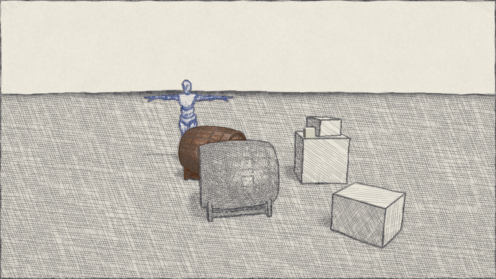
How it draws:
- Hatching builds tone the way a hand does. Each layer switches on as the tone darkens past its threshold, and its strokes thicken from nothing rather than popping in. A layer crosses the one before it off the square (at 0°, +65°, −40° and +25°), so layers never make a grid. Each stroke is a dash of its own length that tapers at both ends, is jittered off its row and is bent by a slow wobble. A few dashes are left out.
- Stroke direction.
surfaceruns strokes along the surface’s iso-depth lines, taken from the gradient of 1/z. That gradient is constant over a plane, so a box face hatches straight, and it turns smoothly round a barrel and across a floor.screenhatches everything atangle.tensorfollows the picture’s luminance edges (a blurred structure tensor), which gets busy around shadows. Where a surface or tensor direction is unsure (a face turned square to the camera, a flat colour),angleshows through. Directions are quantized to 15° bins with neighbouring bins blended, so strokes stay straight within a patch, as hand hatching does. - Contours come from depth steps (drawn on the near side), creases (the normal rebuilt from depth turns), the edge of a styled entity’s mask, and luminance edges by
detail. They are read back through a noise offset (wobble), twice whensketchyis set. - Deterministic. Every random choice is an integer hash of the stroke’s row, dash, layer and
seed, so the same seed draws byte-identical frames.boilmoves the seed in whole steps of post time, which--style-timefixes.
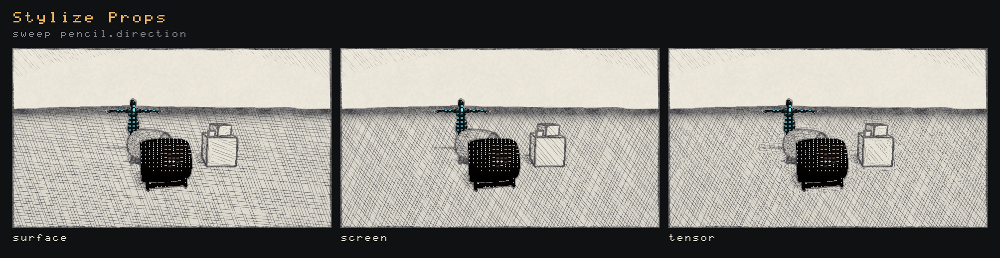
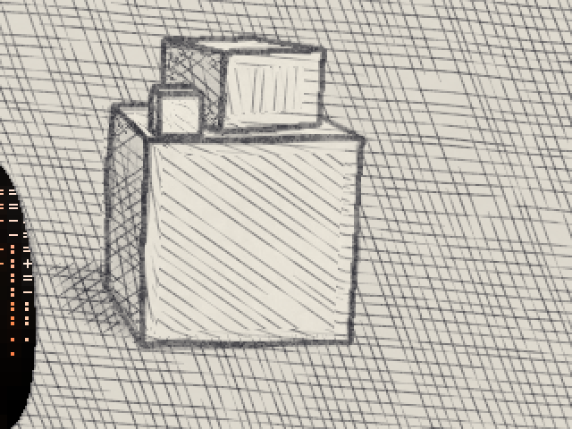
It runs at the display stage, at output resolution, with sizes in points (times the pixels-per-point scale), in two passes. The first pass writes each pixel’s tone, contour strength and stroke direction into a scratch target. The second blurs the direction into a flow and draws the strokes. At 1080p on an RTX 4070 the whole frame costs about 0.49 ms. With only two props asking for it the cost is 0.19 ms, because both full-screen passes still run and only return early on unstyled pixels.
Per entity. Pencil works per entity in the same way as ASCII. A pencil_style component, or a plain style_mask { style = "pencil" }, draws that entity in pencil while the rest of the frame stays as it is, and each distinct set of settings becomes a variant with its own mask id. Every field of the table above except scope can be set on the component, and a field it leaves out comes from the scene’s table, then the default. grid = "object" pins an entity’s hatching to its projected origin, so its strokes travel with it. With scope = "entities" the scene’s table is only a preset. A pixel that another style owns (an ASCII prop in a pencil frame) is left to that style.
[post_process.styles.pencil]
scope = "entities" # a preset for the entities below
spacing = 5.0
[entities.cask.pencil_style]
color = 0.6 # coloured pencil over the cask's own colour
lead = [0.34, 0.17, 0.07]
[entities.ybot.pencil_style]
lead = [0.10, 0.18, 0.45]
sketchy = 1.0
[entities.tag.pencil_style]
enabled = false # stays painted
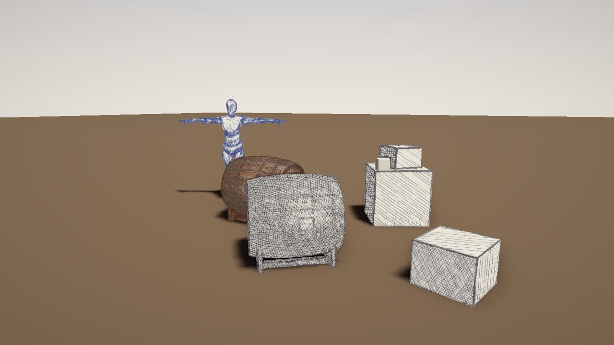
Blending in and out
blend draws an entity part-way into its style, from 0 (its own shading) to 1 (the style’s, and the default when it’s left out). A script ramps it to fade a prop into text and back (#278):
[entities.barrel.ascii_style]
blend = 0.5
transition = "dissolve" # or "fade", the default
#![allow(unused)]
fn main() {
fn on_init() {
let barrel = get_entity("barrel");
set_entity_style(barrel, "ascii");
set_style_param(barrel, "blend", 0.0); // styled, but nothing shows yet
set_style_param(barrel, "transition", "dissolve");
}
fn on_update() {
let k = (total_time() - 1.0) / 3.0; // 0 -> 1 from 1 s to 4 s
let k = if k < 0.0 { 0.0 } else if k > 1.0 { 1.0 } else { k };
set_style_param(get_entity("barrel"), "blend", k);
}
}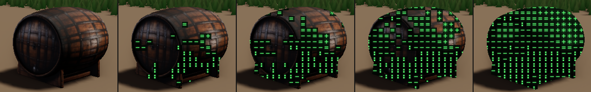
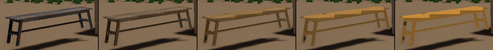
Frames from flint-player demo/ascii_reveal.scene.toml --frame-step 0.05 --screenshot-every 0.05, cropped and doubled.
fademixes every pixel of the entity with its glyph pixel byblend, in display space.dissolveturns whole cells: a cell is a glyph onceblendpasses its place in a dissolve order, half patch noise a few cells across and half per-cell hash, so glyphs arrive in ragged patches that spread. The order is fixed per cell, so a ramp never shimmers, and ongrid = "object"it travels with the prop. On average the share of turned cells equalsblend. A small prop holds few cells, so its share varies more: for a 6x5-cell prop at blend 0.5, the middle 80% of placings turn 30–73% of its cells; for 24x18 cells, 42–58%.- It rides in the mask, not the variant. The style mask carries each pixel’s blend in its
.gchannel beside the id in.r. Two props fading at different rates still share one id, and a ramp makes no new variant, row or GPU object (a GPU test intests/stylize.rsramps it and counts). Like the id, the blend is the styled root’s, inherited by its subtree. style_mask { blend = ... }works too, for a style with no component of its own. A style component’sblendwins over thestyle_mask’s on the same entity.- Under a whole-frame style, a prop at blend 0 is a smooth hole in the glyph field: the blend says how much of the entity’s own variant shows, and below 1 the rest is the picture as it came.
- The
styledebug view draws each entity’s hue as strong as its blend. - Cost. The blend costs one more channel in the mask (
Rg16Uint, 4 bytes a pixel) and no extra texture read. Pixels a blend leaves plain skip the glyph work: at 1080pdemo/stylize_blend.scene.toml’s ASCII pass took 0.31 ms, against 0.39 ms for the same props fully styled.
demo/ascii_reveal.scene.toml is a 10-second loop: the barrel dissolves into phosphor glyphs, the bench fades into amber blocks, and both go back. The ascii-blend golden pins a half-way dissolve and a 40% fade.
Style blends and render-mode tears
--render-mode 1–4 (matrix, blood, drunk, tron) and a style blend can both look like reality tearing into text, but they work at different levels:
| Render-mode tears | Style blend | |
|---|---|---|
| Where | Composite pass, before display styles | Display-stage style, after the composite |
| What it covers | The whole screen, through tear_mask: drifting fbm patches or an iris from the centre, in screen space | One entity and its subtree, through the style mask, on the entity’s own cells |
| Driven by | mode_mix and mode_params (a scene-wide value) | blend on each entity’s component |
| The look | Fixed per mode (mode 1’s glyphs are an 8x12 dot-matrix built into composite_shader.wgsl) | Any style’s settings: fonts, ramps, palettes, edges, grids |
Neither duplicates the other’s job. Tears change how the world is seen, and a blend changes how one thing is drawn. They compose: an ASCII prop inside a matrix tear is glyphized from the tear’s picture, since display styles read the composite’s output. Mode 1’s glyphs and the ASCII style do overlap as looks, and the matrix look (--look matrix) is the ASCII style’s take on it. Letting a style’s blend follow the tear mask, so props turn to text where reality tears, is left for later.
Watercolor
The watercolor style (#272) paints the picture as transparent pigment on paper. Colour bleeds into soft washes, the washes are laid in a few glazes, their borders wander, pigment pools darker along edges and settles into the paper’s grain:
[post_process.styles.watercolor]
wash = 4.0 # how far pigment diffuses, in points (the wash's blur radius)
bleed = 0.55 # how much of the colour is the diffused wash
layers = 4 # glazes: tone steps, each edged darker on its darker side (0 = smooth)
wobble = 2.0 # how far borders and silhouettes wander, in points
wobble_scale = 40 # the wander's wavelength, in points
edge = 1.0 # pigment pooling at colour edges and glaze borders
edge_depth = 0.8 # pooling on the near side of silhouettes, from depth
edge_width = 1.5 # how wide that rim is, in points
turbulence = 0.35 # low-frequency blotches of thicker and thinner pigment
granulation = 0.5 # pigment settling into the paper's valleys, strongest in dark washes
grain = 0.35 # the paper's relief, shading even bare paper
grain_scale = 1.0 # the paper's tooth (bigger = coarser)
pigment = 1.0 # overall density: below 1 dilutes, above 1 deepens
paper_r = 0.97 # the paper's colour (paper_g 0.94, paper_b 0.87)
scope = "screen" # or "entities": a preset for watercolor_style entities
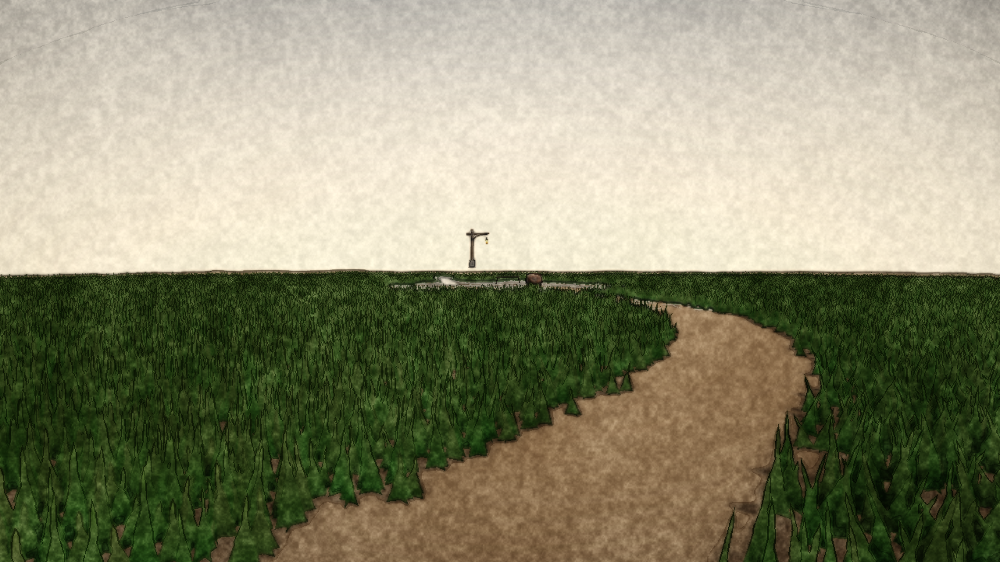
flint render demo/mesh_meadow.scene.toml --style watercolor, 1280x720.
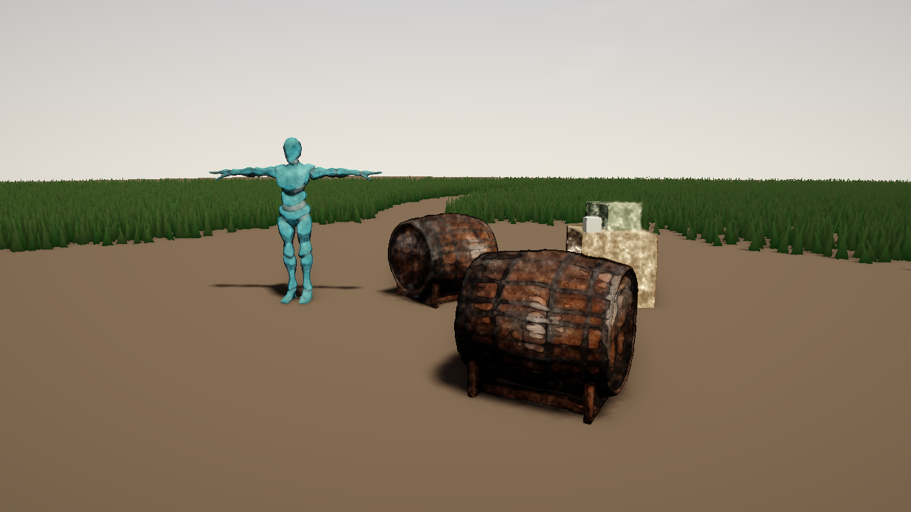
flint render demo/watercolor.scene.toml --no-grid, 1280x720: per entity, as authored.
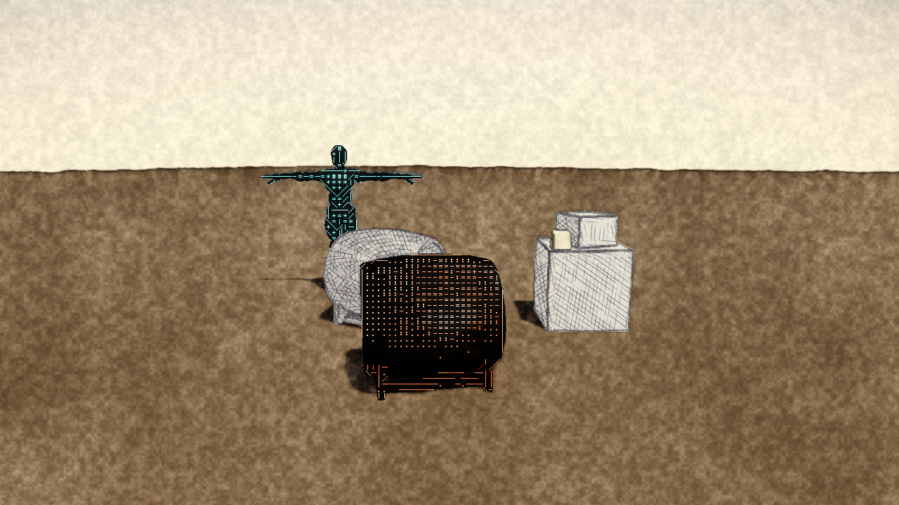
--style kuwahara:radius=4 --style watercolor:layers=3: the two chain.
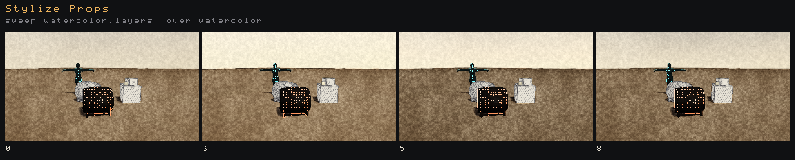
It runs at the display stage, after tonemapping, because it paints on paper: the paper and its grain must not be fogged, bloomed or graded as if they were in the world. Three passes: a separable Gaussian makes the wash (two targets of the style’s own), then the paint pass wobbles where it reads the picture, the wash and the mask, mixes the wash in, steps it into glazes, works out the pigment’s density, and lays it on the paper.
- Density. The colour is treated as the pigment layer’s transmittance over white paper, and a layer
dtimes as thick transmitsC^d(Beer–Lambert). White stays the paper and black stays black; a mid-tone moves most. Edges, glaze borders, depth rims, turbulence and granulation all add tod. - Paper lives in screen space, in points, so its grain holds still as the camera moves and is the same size to the eye at any
--pixels-per-point. The noise is integer-hashed, so a frame is the same on every run. - Per entity. A
watercolor_stylecomponent (its fields are the keys above,paper = [r, g, b]for the paper’s colour) or astyle_mask { style = "watercolor" }paints an entity with no table, the rest of the frame passing through, exactly as per-entity ASCII works: the scene’s table (withscope = "entities") is the preset, entities with equal settings share an id,enabled = falseopts out, descendants inherit. The mask is read at the wobbled position, so a painted prop’s silhouette wanders a little over its surroundings, as a real wash’s would. One frame holds 15 variants.demo/watercolor.scene.tomlpaints a static mesh, a skinned one, two props with settings of their own and an inherited one, and leaves one out. - One wash radius a frame.
washis the largest any variant (or the scene) asks for; every other key is per entity. - With Kuwahara they chain: Kuwahara (HDR stage) flattens the scene into brush pools, and watercolor then paints those pools on paper (
--style kuwahara:radius=4 --style watercolor:layers=3). They share nothing, and neither needs the other. - With ASCII and pencil, watercolor runs first by default (registration order), so glyphs and hatching draw over the paint. Give it a higher
orderto paint over them instead (Order within a stage). - The
watercolorlook (--look watercolor) is the style with softened light (no bloom, lighter SSAO),pigment = 0.85and four glazes.ink_washis still the Kuwahara-built monochrome look.
flint render demo/mesh_meadow.scene.toml --style watercolor -o meadow.png
flint render demo/watercolor.scene.toml -o props.png # per entity, as authored
flint render demo/stylize_props.scene.toml --look watercolor --sweep watercolor.layers=0,3,5,8 -o glazes.png
At 1080p on an RTX 4070 the whole-frame pass costs about 0.43 ms (mesh_meadow, --gpu-time 240). The per-entity demo costs 0.32 ms plus 0.03 ms for the mask: the wash is still blurred over the whole frame, and only the paint pass skips unpainted pixels. --style watercolor:off turns off the scene’s table, not entities that carry a watercolor_style of their own; set enabled = false on them, as with ASCII.
Looks and sweeps
A look (#279) is a named preset you can put over any scene. It lives in styles/<name>.look.toml, next to the *.style.toml generation guides, and has two tables. [look] says what the look is and which sweeps to try first. [post_process] is a block in exactly the scene format. The look’s block is merged into the scene’s own [post_process] key by key: tables merge and everything else replaces, so a look changes only the keys it names. A field or style the engine doesn’t know is an error that names the closest real one, because otherwise a typo would quietly fall back to a default.
[look]
name = "graphite"
description = "Pencil sketch: cross-hatched tone, wobbling contours, paper grain"
tune = ["pencil.spacing=4,6,9", "pencil.contrast=1,1.4,1.8"]
notes = "Spacing is the pencil's sharpness..."
[post_process]
bloom_enabled = false
[post_process.styles.pencil]
spacing = 5.0
contrast = 1.4
wobble = 1.8
Five looks ship, compiled into the CLI so they work from a game repo as well. A styles/<name>.look.toml beside the scene, or in its parent folder, takes the place of a built-in with the same name.
| Look | Built from |
|---|---|
ascii_noir | mono ASCII, black ground, hard contrast, heavy vignette |
matrix | phosphor-palette ASCII with glow, detailed ramp |
ink_wash | Kuwahara radius 6, desaturation, warm paper fog and grade, grain: monochrome brush pools |
watercolor | the watercolor style in four glazes, pigment 0.85, no bloom, light SSAO |
graphite | the pencil style at a 5-point spacing, contrast 1.4, doubled outlines (inverted mono ASCII before #273) |
flint render --look help # every look, its tune sweeps and notes
flint render scene.toml --look ink_wash -o wash.png
flint render scene.toml --look ink_wash --style kuwahara:radius=3 -o sharper.png # flags apply over the look
--sweep KEY=V1,V2,... renders the same frame once per value and lays the frames out as one labelled contact sheet, four across, in the ASCII style’s built-in glyphs. KEY can be:
- any
--stylekey, written<style>.<key>:ascii.cell=6,8,12,ascii.ramp=classic,blocks,kuwahara.radius=3,6,9. Values are checked against the style’s range; - any
[post_process]field, writtenpost.<field>:post.exposure=0.8,1.2. Use|between values to sweep a vector:post.fog_color=0,0,0|0.7,0.75,0.82; look=ascii_noir,matrix,ink_wash,graphite, to compare whole looks.
Each cell is 640x360 unless you pass --width and --height. The scene loads once and every column re-renders the same frame, so four columns of stylize_props take about 13 s in a debug build. A sweep goes over --look and every other flag.
The ASCII looks set no edges key, so they draw the edge glyphs by default; add edges = 0 to a look’s [post_process.styles.ascii] for tone alone. The two sweeps below were captured before edges landed, so the props in them aren’t outlined.
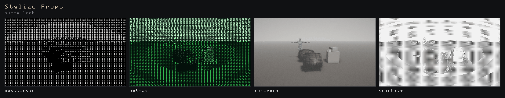
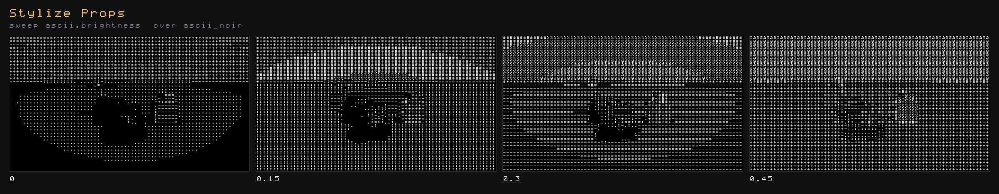
Choosing cell size and ramp
- The cell is in points, not image pixels. A 640-wide sweep cell at
cell = 8is 80 glyphs across, while the same look at 1920 is 240. Use a sweep to compare values against each other, then confirm the winner with one render at the final size. Glow and fine ramps in particular read differently at full size. - Size by columns. About 200–240 columns (cell 8–9 at 1080p) keeps props readable. Below about 120 columns (cell 16 and up at 1080p) the image becomes a poster: silhouettes only, no surface detail. Cells of 4–5 read as texture or hatching, not as letters.
- Pick a ramp for the tones the scene has.
classic(.:-=+*#%@, 10 steps) is the general-purpose ramp.detailed(70 glyphs sorted by coverage) gives the smoothest gradients and the most letter-like texture, so it suits small cells.minimal(.oO@) andblocks(░▒▓█) have five steps each: they band hard, which suits big cells and posters. - Brightness first, then contrast. When a scene comes out mostly black or mostly blank, sweep
brightnessbeforecontrast. Onstylize_propswithascii_noirat brightness 0, contrast 1.6 and 2.2 left the ground black. Contrast 0.6 or 1 brought the ground back, but it also flattened the props into it. Brightness 0.15 at contrast 1.6 brought the ground back and kept the props dark against it.
Where styles run
Each style belongs to one of two stages:
scene (HDR, render scale)
-> style mask (Rg16Uint: id + blend, only while a style reads it)
-> HDR styles (Kuwahara) linear Rgba16Float, scene resolution
-> SSAO, volumetric, bloom
-> composite: fog, DoF, tonemap, grade, vignette, grain, render modes
-> Display styles (watercolor, ASCII, pencil, invert) surface format, output resolution
-> FXAA -> surface -> HUD
- HDR stage. Linear light at the scene’s render scale. Everything after it shades the style: fog fades it, bloom haloes its bright strokes, the grade tints it. SSAO and bloom read the unstylized scene.
- Display stage. The finished, tonemapped picture at output resolution, after the render-scale upscale and before FXAA and the HUD. This is where glyphs and lines stay crisp under
--render-scale(the ASCII spike’s finding).
Styles of one stage run one after another, each reading the one before it. The framework ping-pongs between two targets it owns, so any number of styles chain without a style knowing its neighbours.
The display stage keeps its memory to two full-size textures (#302). At 1440p each one is about 15 MB, which matters on phones and the web. The composite draws into the stage’s input, and once the first style has read that input it is free to be a ping. With FXAA on, FXAA’s intermediate is the second texture: the composite draws into whichever of the two leaves the last style writing the intermediate. So one style needs one texture of its own (two with FXAA’s), and longer chains need two (still two with FXAA’s). The output is byte-identical to the old chain. A style’s own intermediates come on top of these; watercolor’s two washes are full size, for example. The player’s F3 stats show every target as Style targets: N (MB, K full-size), where the full-size count includes FXAA’s intermediate. The count is everything asked for since the last resize, so switching a style off doesn’t lower it.
Order within a stage
By default a stage runs its styles in registration order: kuwahara, watercolor, ascii, pencil, invert, mask_view, then user styles in the order they loaded. A style’s table can give it a place of its own with order (#299). Lower runs first; a style without one stands at its registration index (watercolor 1, ascii 2, pencil 3, invert 4), and equal orders keep registration order:
# ASCII first, then watercolor paints over the glyphs
[post_process.styles.ascii]
[post_process.styles.watercolor]
order = 9
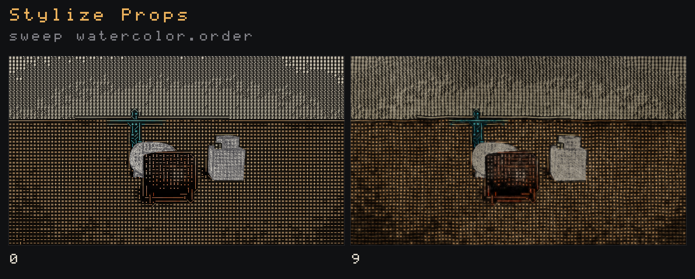
- Any number works: an integer, a fraction to slip between two (
order = 2.5), or a negative to go before everything. - Only styles of the same stage compare. An HDR style always runs before a display style.
- A table switches its style on, so to place a style without turning it on write
enabled = falsebesideorder. Kuwahara takesorderin a[post_process.styles.kuwahara]table, as it keeps its other settings in itskuwahara_*fields. --style ascii:order=0sets it from the command line, and--sweep watercolor.order=0,9lays the orders side by side.- The F4 Styles section opens with each stage’s chain, first to last; swap runs a style before the one ahead of it, and Copy TOML writes the
orderback out.
order is a key of every style’s own table, not a style_order = [...] list on [post_process], because everything else about a style lives in its table: a look or a --style word that adds one style can place it without restating every other style, Copy TOML stays one block, and a list naming a style the scene doesn’t use would need its own warnings. The cost is that the whole order isn’t written in one place, which is what the F4 chain line shows instead. No style may name a parameter or option order or enabled.
Writing a style
A style is one module in crates/flint-render/src/stylize/ plus its name in the register_styles! list at the bottom of stylize/mod.rs. The module exports a StyleDescriptor called STYLE:
#![allow(unused)]
fn main() {
pub(super) static STYLE: StyleDescriptor = StyleDescriptor {
name: "invert", // the [post_process.styles.<name>] key
label: "Invert", // F4 and --gpu-time
stage: StyleStage::Display,
params: &[StyleParam { name: "strength", default: 1.0, min: 0.0, max: 1.0 }],
options: &[], // named strings: StyleOption { name, default, choices }
enabled: None, // None: read `enabled` from the style table
uses_mask: false, // true: the renderer draws the entity style mask for it
needs: &[], // &[StyleNeed::Edges]: the shared geometry edges (#301)
hints: &[StyleHint::new("strength", "Strength", "0 = none, 1 = the full negative")],
component: None, // Some("ascii_style"): entities take the style per entity (#266)
create: |d| Box::new(Invert::new(d)), // build pipelines in d.format
};
}hints are optional, and F4 draws a style without them: a setting with no hint shows its own name (edge_max becomes “Edge max”) on a plain slider. A hint gives a setting (or a colour, by its key) a label, a hover line, and .integer() for a value that only makes sense whole (ASCII’s cell size).
Colours
A colour is three parameters named <base>_r, <base>_g and <base>_b, each 0–1 in display values (what the eye sees, sRGB-encoded), and the framework makes them one setting (StyleColor, #315) everywhere a person or an agent meets it:
| Where | What it looks like |
|---|---|
Scene table, ascii_style-type components | tint = [1.0, 0.7, 0.25] (integers allowed) or tint = "#ffb340"; a channel on its own (tint_g = 0.5) still works |
--style | ascii:tint=#ffb340 or ascii:tint=1/0.7/0.25 |
| F4 → Styles | one colour picker |
Copy TOML (stylize::style_toml) | tint = [1.0, 0.7, 0.25], only when it differs from the default |
--list-styles | one row, tint [0.35, 1, 0.45] colour; colors in the JSON |
Scripts’ set_style_param | set_style_param(id, "tint", [1.0, 0.7, 0.25]) or "#ffb340", clamped to the channels’ ranges |
The style, in encode | frame.color("tint") → [f32; 3]; per entity, frame.variant_color(v, "tint") |
Underneath they stay three parameters, so a per-entity variant row or a uniform reads three numbers as before and a style declares nothing new. A user-authored style gets the same by naming three [params] that way. StyleDescriptor::colors(), color_setting(base) and color_of(param) find them; stylize::color_from_toml / color_from_text parse the two spellings.
and the StylePass that create returns records the style’s draws for one frame:
#![allow(unused)]
fn main() {
impl StylePass for Invert {
fn encode(&self, frame: &StyleFrame<'_>, encoder: &mut wgpu::CommandEncoder,
input: &StyleInput<'_>, output: &wgpu::TextureView) {
// write uniforms from frame.param("strength"), then draw one
// full-screen triangle that samples `input` into `output`
}
}
}stylize::kit has the parts most styles are made of: fullscreen_pipeline, uniform_layout, sampled_layout, uniform_buffer, shader and fullscreen_pass. stylize/invert.rs and invert.wgsl together are about 140 lines.
What a style gets from StyleFrame:
width, height, format, texel_size(), srgb() | the stage’s size and format |
param(name) | the style’s parameter from the config, or its default |
option(name) | the style’s option (a string) from the config, or its default |
color(name) | the style’s colour name (tint) as [r, g, b] in display values, each channel from the config or its default (#315) |
pixels_per_point | the window’s scale factor (1 headless, or flint render --pixels-per-point), for styles sized in points |
scene_dir | the scene’s folder when the host knows it, for styles that load files (ASCII’s glyph sets) |
depth, camera | the scene’s depth (sample by UV) and the inverse view-projection, position, near and far |
mask, mask_bind(...), style_id(name) | the entity style mask, while a uses_mask style is on |
edges, edges_bind(...) | the shared geometry edges, while a style that needs them is on |
target(name, format) | a texture of the style’s own at the stage’s size, kept until the next resize |
sampled(...), sampled_input(...), uniform(...), bind(...), depth_bind(...) | bind groups kept with the post chain |
first_write(name) | true once per chain, for uniforms that only change on resize |
time | game seconds, for animated styles |
What the framework does so a style doesn’t have to:
- Lazy building. A style’s pipelines are built the first frame it is on, under
catch_unwind(some drivers crash compiling shaders); one that fails stays off. Hosts can callSceneRenderer::ensure_style_resourcesafter setting a config to move the compile off that frame. - Resize. Every target and cached bind group lives in the post chain’s resources, which
resize_postprocess()rebuilds. There is no per-style resize hook to forget. - Formats. HDR-stage styles draw in
Rgba16Float; display-stage styles in the surface format. On an sRGB surface a display style samples linear values and its writes are encoded, so a style that works in display values decodes and encodes itself (frame.srgb();invert.wgslshows how). - Samplers. Styles bind the chain’s one linear sampler, so their bind groups add nothing to DX12’s 2048-slot sampler heap.
- The mask. A
uses_maskstyle gets the entity style mask drawn for it each frame, and no style pays for it otherwise. - Shared inputs. A style that lists
StyleNeed::Edgesinneedsgets the geometry edge texture, drawn once a frame however many styles read it. - Timing. Each style is a GPU-timer scope under its
label, soflint render --gpu-timeand the player’s--perfname it. - The command line.
flint render --style <name>reaches a new style from its descriptor alone.
User-authored styles
Experimental, format version 1 (ADR 0112; #274, #275). flint render, flint edit, flint-player, flint bundle and the web player all load them.
A game can write a style without touching the engine: a styles/<name>.shader.toml and one WGSL function beside it. Flint finds them in the scene’s styles/ folder, then in the folder above (as it finds models), so a game with levels/ and styles/ side by side needs nothing else. Start from the commented template, demo/styles/template.shader.toml and template.wgsl: copy both into your styles/, rename them and edit.
# styles/greyscale.shader.toml
version = 1
name = "greyscale" # the file stem; lowercase, digits and _
stage = "display" # or "hdr"
shader = "greyscale.wgsl"
inputs = [] # any of "depth", "mask", "edges"; colour is always there
[params.amount]
default = 1.0
min = 0.0
max = 1.0
label = "Amount" # optional, with help = "..." and integer = true
// styles/greyscale.wgsl
fn style(p: StylePixel) -> vec4<f32> {
let grey = vec3<f32>(flint_luma(p.color.rgb));
return vec4<f32>(mix(p.color.rgb, grey, params.amount), 1.0);
}
It is then a style like the built-ins: [post_process.styles.greyscale] turns it on, --style greyscale:amount=0.5 and --sweep greyscale.amount=0,0.5,1 reach it, and the F4 menu draws its sliders (<base>_r/_g/_b params become one colour picker).
Flint writes everything around the function: the bindings, a params struct with one f32 per parameter, and the entry points. p.uv is 0..1 from the top left, p.pos the pixel, p.color the input there. At the display stage colours in and out are display values on any target, so a style never decodes sRGB itself. At the hdr stage they are linear HDR.
flint.resolution, flint.texel, flint.time, flint.frame, flint.pixels_per_point | the frame |
flint.near, flint.far, flint.camera_pos, flint.inv_view_proj | the camera |
flint_sample(uv) | the input anywhere, in the same space as p.color |
flint_luma(c), flint_hash(v), flint_to_display(c), flint_to_linear(c) | small helpers |
flint_depth(uv), flint_view_depth(uv), flint_world_pos(uv) | with inputs = ["depth"]: raw depth, metres from the eye, the world position |
flint_mask_id(uv), flint_style_blend(uv) | with inputs = ["mask"]: the style mask id, and 0..1 for entities whose style_mask names this style (their blend) |
flint_edges(uv), flint_edge(uv) | with inputs = ["edges"]: the shared edges (silhouette, crease, direction), and the stronger of the two strengths; 1 is an edge |
When it goes wrong. Flint checks the composed shader with naga before the GPU sees it. An error names your file, line and column, quotes the line, and gives a hint if you called a depth or mask helper without declaring the input. A style that doesn’t compile still loads and draws its input unchanged, so the scene keeps its other styles. Loops are allowed, but each one is warned about: a loop that never ends hangs the GPU until the driver resets it.
Hot reload. Natively, both files reload while the player or viewer runs, a few times a second:
- Save the
.wgsland the next frames draw it. If the edit doesn’t compile, the last good build keeps drawing. - Save the
.shader.tomland the style is replaced where it stands in the chain, with its new parameters, label, stage, inputs or shader. The scene’s[post_process.styles.<name>]is read again against them (other F4 edits stay). A description that no longer reads keeps the old style and reports. - A new
*.shader.tomldropped into astyles/folder is picked up too.
Until a broken style compiles, a card in the bottom-left corner of the player and the viewer shows its error with the line it points at, and the style’s F4 header is tagged error (hover it for the message; the user tag beside it names both files). flint render prints the same message and renders the passthrough.
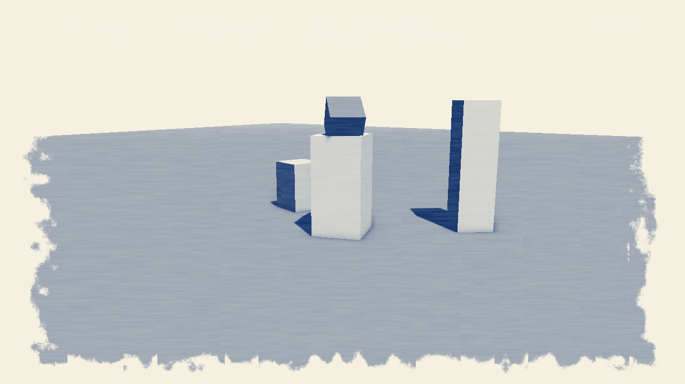 | 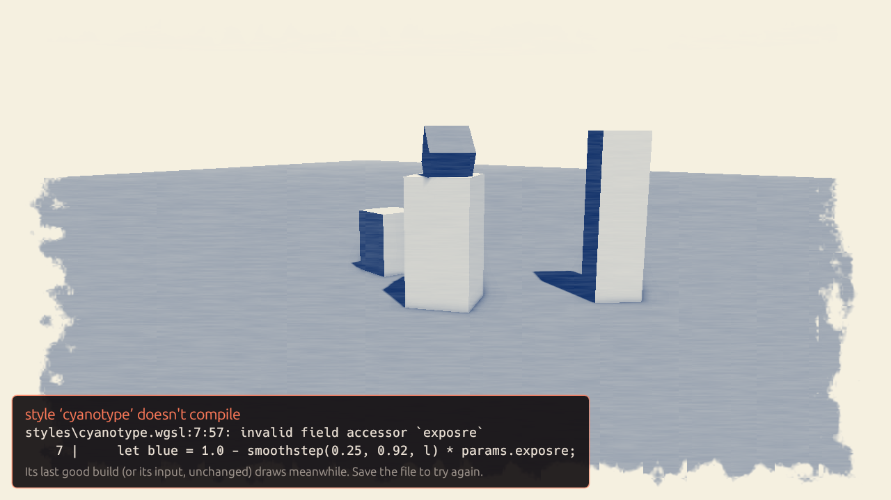 |
|---|---|
A game outside the engine (levels/, styles/cyanotype.*) in flint-player, after its .wgsl was edited live | The next save had a typo (params.exposre): the card names cyanotype.wgsl:7:57 and quotes the line while the last good build keeps drawing |
On the web. flint bundle packs styles/ with the rest of the game. It loads every user style each scene sees from the packed files, the way the browser will, and refuses the bundle if a description doesn’t read, its shader isn’t packed or the shader doesn’t compile. In the browser the style is checked by the browser’s own compiler, and nothing reloads (#415 tracks showing those errors on the page).
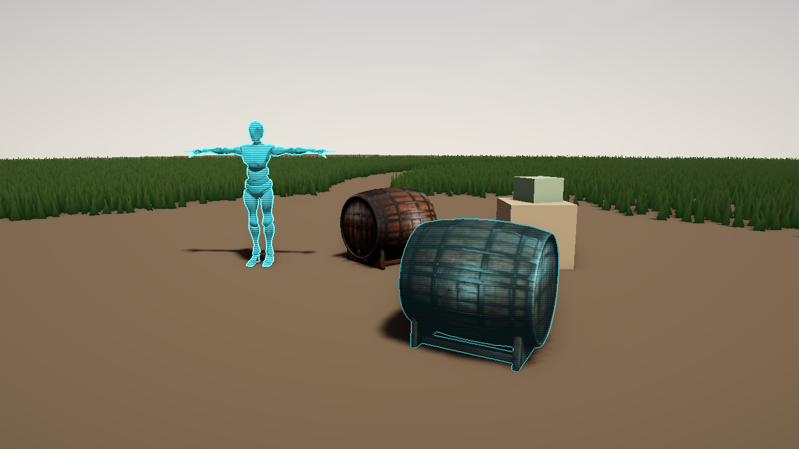 hologram: inputs = ["mask"]; the YBot and the barrel carry style_mask { style = "hologram" }, the barrel at blend = 0.6 | 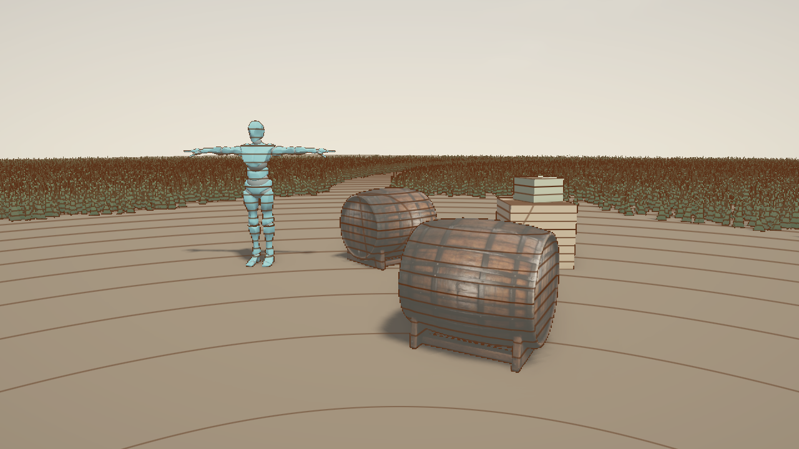 --style contour: inputs = ["depth"]; height lines from flint_world_pos, range rings round the eye |
|---|---|
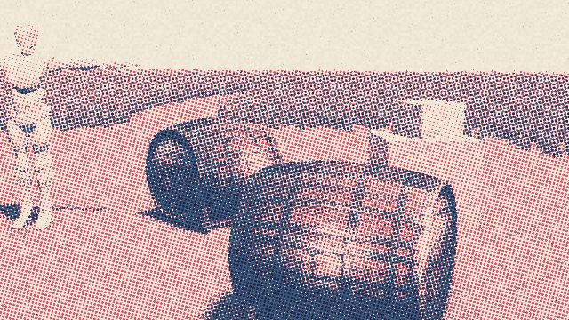 --style risograph (a crop at 1:1): two dot screens out of register, colour only | Each is one .shader.toml and under 50 lines of WGSL in demo/styles/; none needed a rebuild of the engine |
What a user style can’t do yet: more than one pass, textures of its own, string options, per-entity settings (a component like ascii_style), frame history. The built-ins that need those stay in Rust. The demos in demo/styles/ show what one pass reaches: risograph (two misregistered inks), contour (survey lines from depth) and hologram (a style mask on chosen props, demo/user_styles.scene.toml).
Goldens
Every registered style is pinned by a golden image in crates/flint-cli/tests/golden/, listed in stylize.goldens.toml (#271). flint render-suite renders each case with flint render and fails when one moves past its tolerance; cargo test -p flint-cli --test render_goldens runs the same suite.
flint render-suite crates/flint-cli/tests/golden/stylize.goldens.toml # gate
flint render-suite crates/flint-cli/tests/golden/stylize.goldens.toml --case ascii-entity
flint render-suite crates/flint-cli/tests/golden/stylize.goldens.toml --bless # after a deliberate change
| Case | What it pins |
|---|---|
ascii-full | --style ascii:edges=0 on pbr_test: the #265 golden, unchanged with edges off |
ascii-full-detailed-tint | another ramp and the tint colour mode on stylize_props, with edges |
ascii-full-hidpi | --pixels-per-point 2: cells in points (edges off: the editor grid would be traced) |
ascii-full-msaa4 | --msaa 4 scene passes under the glyph grid (edges off) |
ascii-edges-pbr | edges on pbr_test, grid off |
ascii-edges, ascii-edges-msaa4, ascii-edges-scale05 | the styled sphere and box of demo/ascii_edges.scene.toml outlined, at 1x, under MSAA 4 and at --render-scale 0.5 |
ascii-entity, ascii-entity-object | the spike’s per-entity modes (#261), screen and object grids |
style-mask | the entity style mask the per-entity styles read (--debug-mode style) |
edges-view, edges-inkline-scale05 | the shared edges on the props scene, and a user style reading them beside edges_view at --render-scale 0.5 |
invert, kuwahara | the other styles, with a tighter tolerance |
Cases render single-sample with the post clock at 0 unless they say otherwise. The props cases use demo/stylize_props.scene.toml, which loads in a few seconds in a debug build, with the grid off. Glyph styles share #265’s tolerance (fail when more than 2% of pixels differ by more than 48 levels, or the mean passes 3), since a cell on a ramp step’s border can flip glyph on another GPU; smooth styles take level = 8, share = 0.003, mean = 0.25, because Kuwahara at radius 4 against a radius-5 golden is a 0.39 mean the glyph limits would pass. On one machine, every case is byte-identical run to run. A new style adds a case here. The manifest format is in Headless Rendering.
Shared edges
Line styles are defined by their edges, and the edges that read best come from the geometry, not the picture’s colour: a wood texture makes none, while a table’s outline and the creases where its faces meet do (the ASCII spike’s round 2, #261). Finding them costs a 5x5 patch of positions unprojected from the depth for every pixel, so the framework does it once a frame (#301) and hands the result to every style that asks. A style asks in its descriptor, needs: &[StyleNeed::Edges], and reads frame.edges (bind it with frame.edges_bind(...) over a kit::texture_layout); a user style adds "edges" to its inputs and calls flint_edges(uv).
The texture is Rgba16Float at the depth’s size (the scene’s, so under --render-scale a display style reads it by UV, like the depth and the mask):
| channel | holds |
|---|---|
r | silhouette strength: a 3x3 Sobel of the view distance relative to the centre pixel’s (so a far edge counts as much as a near one), kept on the near side only, over edge_depth |
g | crease strength: the Sobel of normals rebuilt from the depth, counted only where the 5x5 patch is one surface (across a depth step rebuilt normals mark a band on both sides), over edge_normal |
ba | the unit direction across the edge in screen space (x right, y down): the silhouette’s where r >= 1, else the crease’s, picked from both axes of the normal Sobel |
A strength of 1 is an edge at the scene’s thresholds. The two pixels at each border are always 0, where the patch clamps and makes a degenerate normal.
[post_process]
edge_depth = 0.6 # the relative view-distance step that is a silhouette
edge_normal = 2.5 # the normal change that is a crease
The thresholds are shared because the pass is: every style reading the edges sees the same strengths. A style that wants more or fewer lines compares them against a level of its own (demo/styles/inkline.wgsl multiplies them by its reach). flint render --edge-depth / --edge-normal set them for one render, and F4’s Styles section has them under Shared edges.
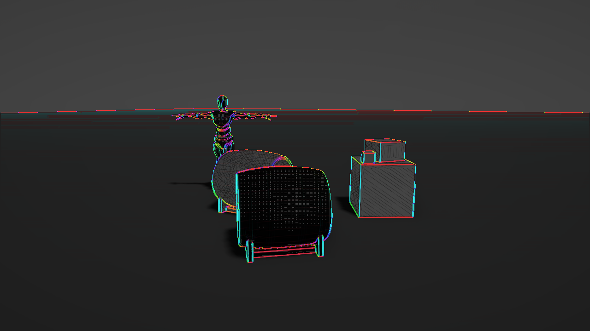 | 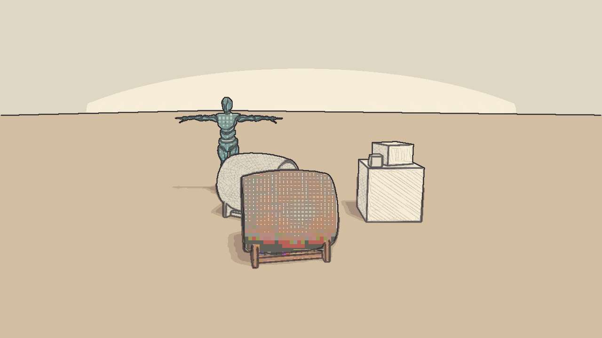 |
|---|---|
--style edges_view: the texture itself. Hue is the direction (opposite sides of a line agree), silhouettes are solid, creases softer; ghost shows strengths just under the threshold while tuning | --style inkline (demo/styles/inkline.*): flat paper tones under ink from flint_edges, about 40 lines of WGSL. Here it runs after the scene’s own ASCII and pencil props |
At 1920x1080 on an RTX 4070 the pass costs about 0.16 ms, once, with one or two styles reading it (--gpu-time names it Style edges); edges_view and inkline add 0.04 ms each. While no style that needs the edges is on, the pipeline isn’t built and nothing is drawn. The ASCII and pencil styles still find their own edges (ASCII’s also outlines its own mask ids, pencil’s adds luma edges); moving them onto the shared texture is still to do.
The entity style mask
A style that should change only some entities (per-entity ASCII, watercolor or pencil) needs to know, per pixel, which entity drew it. The entity style mask is that answer: an Rg16Uint texture at the scene’s resolution, with one id a pixel in .r (0 where no style asked) and the entity’s blend in .g (65535 for 1, #278).
An entity asks with the style_mask component:
[entities.barrel.style_mask]
style = "pencil" # entities sharing a name share an id
[entities.lantern_glass.style_mask]
enabled = false # out of any style, including an inherited one
Descendants inherit their ancestor’s style until one of them carries a style_mask of its own. Ids are numbered from 1 in name order, so the same scene gets the same ids on every run; a style finds its own with frame.style_id("pencil").
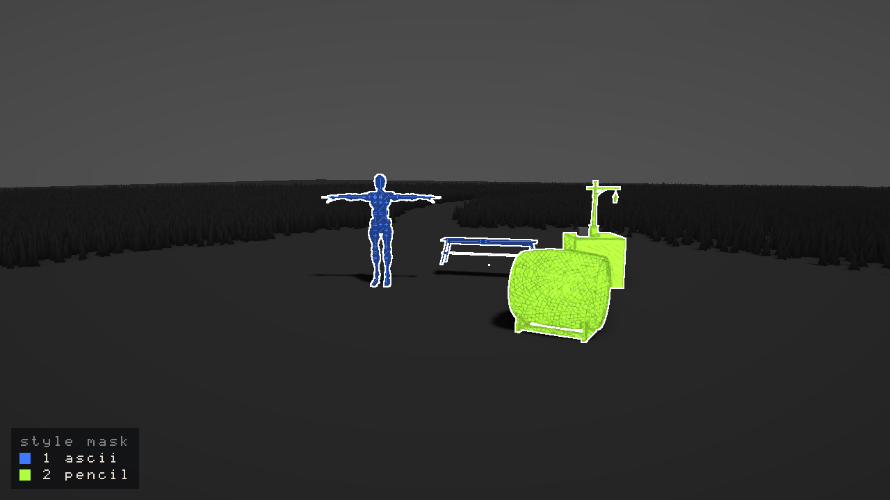
See it with the style debug view, which switches the mask_view style on:
flint render demo/style_mask.scene.toml --debug-mode style --output mask.png
Each style is a hue over the scene’s shading, unstyled pixels are grey, and a white line marks where two ids meet. A legend in the image’s lower left gives each id’s swatch and name, and the command prints the same table (#309):
style mask: 1 ascii (blue), 2 pencil (lime)
Ids follow name order, so they shift when a scene adds a style: read the legend rather than remembering a hue. A variant is its own row (ascii{ramp=blocks}, ascii@barrel). In the player and viewer the view is Style Mask in F4’s debug shading list, and choosing it shows the same legend under the list; flint_render::style_mask::legend / legend_line build it from SceneRenderer::style_ids() for any other host.
How it’s drawn:
- A redraw, not a new attachment. After the scene pass, each visible opaque draw of a styled entity is drawn again into the mask with its cached transform bind group (and bone bind group for skinned meshes). The scene pipelines don’t change and the per-entity loop makes no buffers or bind groups; the ids go up in one write a frame.
- Depth without a depth buffer. A mask fragment tests itself against the scene’s single-sample depth with a tolerance of twice its own depth slope, so grass or a wall in front of a styled prop cuts its mask. Under
--render-scalethe mask is at the scaled size, and a display-stage style reads it by UV. - MSAA: drawn 4x, resolved “any sample wins” (#306). Under
--msaa 4the mask is drawn into a 4x target of its own, and each sample the triangle covers is tested against that sample of the scene’s multisampled depth. A resolve then folds the four samples into the single-sample mask the styles read: a pixel takes the id that covers the most samples, and is empty only if no sample was styled. Drawn single-sample at pixel centres, a feature about a pixel thin (the bench’s seat edge at a grazing angle) lost the pixels the scene’s samples gave it, and an outline style drew the gaps as white dashes. The 4x target costs 33 MB at 1080p, and only while MSAA and a mask-reading style are both on. - Only when wanted. The mask target and its pipelines exist only once a style with
uses_mask(or the debug view) is on. At 1080p on an RTX 4070 the pass (with the veil) costs about 0.022 ms fordemo/style_mask.scene.toml’s styled entities, or about 0.05 ms under MSAA 4 with the 4x draw and its resolve, some 0.025 ms more than the single-sample mask cost there before #306. - What’s masked. Static glTF meshes, procedural boxes, skinned meshes, terrain (#310) and styled transparents (#310, below). Particles, sprites, grass and water never are: grass is instanced, and the rest write no depth to test against.
Terrain and transparents
A heightmap terrain is masked like any mesh when its entity carries a style_mask or a style’s component (ascii_style, pencil_style), or inherits one. Each visible chunk is redrawn into the mask with the terrain’s own transform, so an ASCII or pencil ground runs under smooth props, and every unstyled prop on it cuts its own hole, pixel by pixel, from the depth test:
[entities.ground]
archetype = "terrain"
[entities.ground.ascii_style]
color = "tint"
tint = [1.0, 0.72, 0.32]
The host names the terrain’s entity (SceneRenderer::set_terrain_entity) beside load_terrain; flint render and the player do.
A styled transparent is a lens. Glass, a ghost or a hologram with a style of its own is drawn into the mask after every opaque, back to front as the scene drew it. It writes no depth, but it is tested against the depth the opaques wrote, so an opaque in front still hides it. Where it shows, its id (and its blend) replaces whatever was behind it, and the style draws that whole pixel: what you see through a green-glyph pane comes out in green glyphs. The decision, and the alternatives it was chosen over:
- Skip styled transparents (the mask before #310). A pane that asks for a style would draw as plain glass, which surprises whoever asked.
- Mask by coverage. A half-covered pixel would be a share of the glass’s style and a share of what’s behind. One id per pixel can’t carry two styles, and the coverage would need the material’s alpha (texture and all) in the mask pass itself; the veil below samples it only for unstyled transparents. The blend channel already gives a lens a softer edge: set
blendbelow 1 on the pane to mix the style with the plain view through it.
What the lens costs: the pixel the style redraws is the composite (glass and all behind it), and a transparent cut-out (an alpha-textured leaf card drawn blended) masks its whole quad, since the mask pass doesn’t sample the material. Unstyled transparents in front of a styled entity, the lens included, are the veil’s (below), the other side of the same question. The veil is depth-tested only against opaques, so an unstyled transparent behind a styled pane also thins the pane’s blend where they overlap.
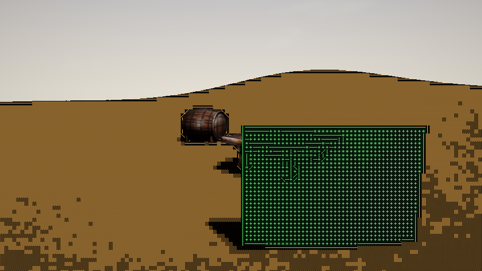
What’s in front: the veil
Transparents and particles write no depth, so the depth test alone can’t see them: where fire or glass sits in front of a styled stone, the stone’s id would stay in the mask and the style would draw the fire as if it were stone. The rule (#290) is that what’s in front unmasks by its coverage. Just before the mask, a veil pass draws every visible transparent mesh (static and skinned) and every particle into an R8Unorm target, depth-tested against the scene and never writing it, with the alpha it is drawn with (an additive particle covers by its alpha times its brightest channel). Layers blend “over” each other, so two faces of 50% glass cover 75%. The mask then writes each styled pixel’s blend times what the veil leaves uncovered.
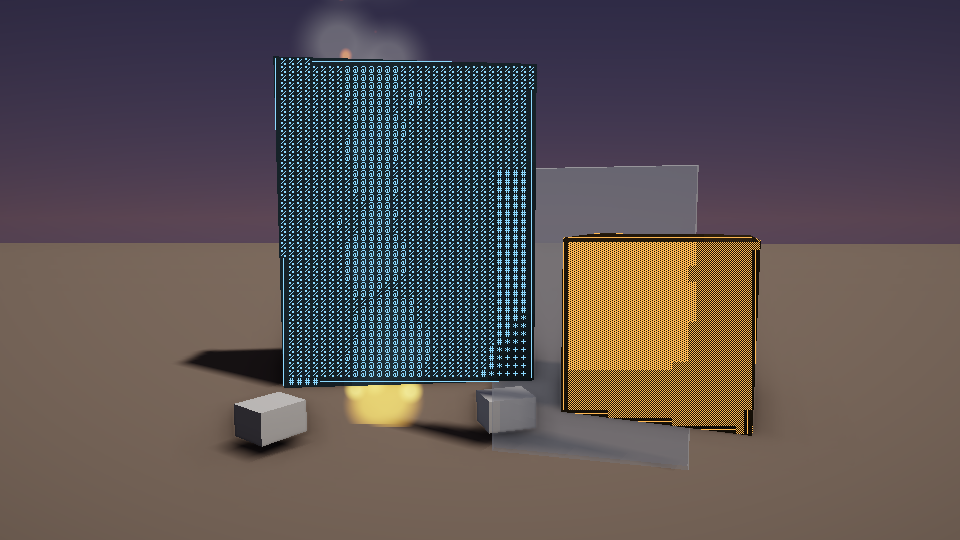
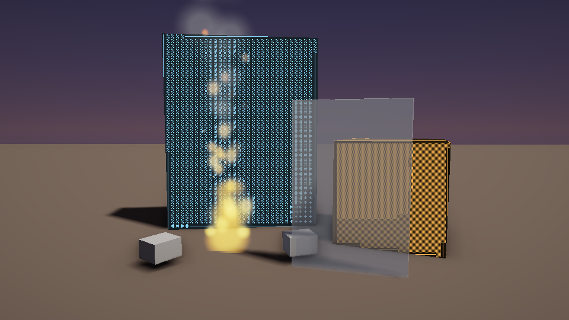
flint render demo/style_veil.scene.toml --particle-time 2 --output veil.png
- A style that honours the blend (ASCII, and user styles through
flint_style_blend) shows the fire as fire and the stone through any uncovered share. A fully covered pixel keeps its id at blend 0, so under a whole-frame ASCII the stone behind thick smoke is a smooth hole, as a blend-0 entity is. Pencil and watercolor ignore.gand still draw what’s in front in their style until the framework cross-fade (#396). - A transparent that is itself styled stays out of the veil: it is in the mask as a lens (above).
- The pass costs about 0.02 ms at 1080p on an RTX 4070 for
demo/style_veil.scene.toml(69 particles and a pane), and is skipped in a frame with no styled draws.
To read it in a style, set uses_mask: true, make a layout with kit::mask_layout and bind it with frame.mask_bind(...); in WGSL it is a texture_2d<u32> read with textureLoad, the id in .r and the blend in .g (stylize/mask_view.rs and mask_view.wgsl show the whole thing). A per-entity style honours a blend by mixing its pixel with its input by f32(m.g) / 65535.0; one that ignores .g draws every entity at blend 1.
Per-entity settings
A style that takes settings per entity names its component in its descriptor: component: Some("ascii_style"), with a schema in schemas/components/. The framework then does the rest:
- an entity carrying the component (or a
style_masknaming the style) switches the style on for the frame, and the mask is drawn, with no[post_process.styles]table; - the component’s fields are read as the descriptor’s params and options (a 3-array
xfillsx_r,x_g,x_b), and each distinct set is aStyleVariantwith its own mask id, named for its settings (ascii{cell=12,ramp=blocks},ascii@barrel,ascii{off}forenabled = false); - a style whose
gridoption isobjectgets one variant per styled root, withanchorset to the root’s world origin each frame (frame.project(anchor)puts it on screen).
In encode, frame.variants() lists this style’s (id, variant) pairs, frame.variant_param(v, "cell"), frame.variant_option(v, "ramp") and frame.variant_color(v, "tint") read a variant’s settings with the scene’s as fallback, and frame.whole_frame() says whether the scene’s table covers everything. stylize/ascii.rs and stylize/pencil.rs pack them into a table indexed by mask id; watercolor (#272) can do the same.